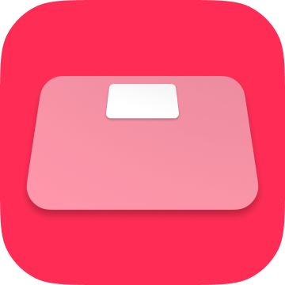

TapWeight
Daftarkan data berat badan Anda di aplikasi Health Care secepat mungkin.



Gambaran umum.
Ini adalah cara tercepat (manual) untuk mendaftarkan data berat badan di aplikasi Apple 'Health Care' yang sudah terpasang di iPhone.
Pengguna yang dituju / kasus penggunaan
- Tidak memiliki timbangan pintar.
- Mereka mengukur berat badan dan persentase lemak tubuh mereka pada timbangan setiap hari.
- Mempertimbangkan untuk mendaftarkan hasil pengukuran secara manual di aplikasi 'Healthcare' segera setelah setiap pengukuran pada timbangan.
Pilihan
- Unit
- kg kilogram
- lbs pound
- St Stone.
- Unit input dapat diubah dari 100g ke 50g
- BMI dapat dihitung dan didaftarkan secara otomatis pada saat yang bersamaan
- Persentase lemak tubuh dapat didaftarkan pada saat yang sama
- Tanggal dan waktu pendaftaran dapat diubah.
Fitur lainnya
- Peluncuran aplikasi Apple Health Care dengan sekali ketuk dari dalam aplikasi ini.
- Pendaftaran dapat dibatalkan segera setelah pendaftaran.
- Fungsi riwayat dalam perangkat untuk pemeriksaan operasi dan pencadangan sederhana.
Catatan.
Aplikasi ini tidak dapat membaca, melihat, atau mengelola data sebelumnya di aplikasi Health Care. Aplikasi ini hanya ditujukan untuk mendaftarkan data di aplikasi 'Perawatan Kesehatan'. Silakan periksa data yang terdaftar di aplikasi 'Health Care'.
Latar belakang.
Orang sering mengukur berat badan dan persentase lemak tubuh mereka setiap hari dengan menggunakan timbangan. Banyak pengguna iPhone yang mendaftarkan data berat badan dan lemak tubuh mereka pada aplikasi 'Health Care'.
Solusi terbaik adalah menggunakan timbangan pintar yang bekerja dengan aplikasi Health Care dan secara otomatis menyimpan pengukuran, tetapi ini bisa jadi mahal dan tidak dapat diakses. Meskipun dimungkinkan untuk mendaftarkan data secara manual pada aplikasi Health Care, sayangnya aplikasi Health Care tidak dirancang untuk pendaftaran pengukuran secara manual secara rutin. Oleh karena itu, memasukkan data secara manual yang terjadi secara terus menerus setiap hari, seperti pengukuran berat badan, dapat menjadi pengalaman yang sangat menyita waktu dan membuat stres.
Aplikasi ini dikembangkan untuk memecahkan masalah tersebut.
Spesifikasi
Harga
Gratis
Pembelian dalam aplikasi
Sembunyikan iklan (160 yen)
Platform
- iOS 15.0 atau yang lebih baru
Bahasa yang didukung
- Semua
- Bahasa Jepang
- Bahasa Inggris
- Hanya 3 kata utama (suhu tubuh/suhu tubuh dasar/perawatan kesehatan) yang diterjemahkan.
- Bahasa Mandarin Sederhana
- Tradisional Cina
- Bahasa Mandarin Sederhana Bahasa Mandarin Tradisional Cina
- Bahasa Portugis
- Rusia
- Bahasa Indonesia
- Bahasa Prancis
- Bahasa Arab
- Bahasa Jerman
- Bahasa Korea
- Ukraina

日本語(native)
English
Indonesia
Español
Deutsch
Français
Português
Русский
中文
Українська